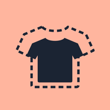

ChoudoSupport
Choudo shows how each size of a shirt, pants, a dress or a jacket would fit you before you buy. It compares each size’s real measurements with yours, zone by zone.
Get in touch: Choudo.app@gmail.com. Tell us which garment and size, and what looked wrong; we read everything.
How are sizes worked out?
From the brand’s own size chart and your measurements. Choudo estimates your measurements from your height, weight and body type, or uses the ones you enter, then compares each part of the garment (chest, waist, length and so on) with your body and says how it would fit.
Why does a size say “estimated”?
Some of the numbers behind it aren’t printed on the size chart, or yours were estimated from height and weight. Adding your own measurements on the body screen makes the answer surer.
How do I delete my data?
Delete the app. Everything Choudo keeps is on your phone only; there’s no account to close. See the privacy policy.